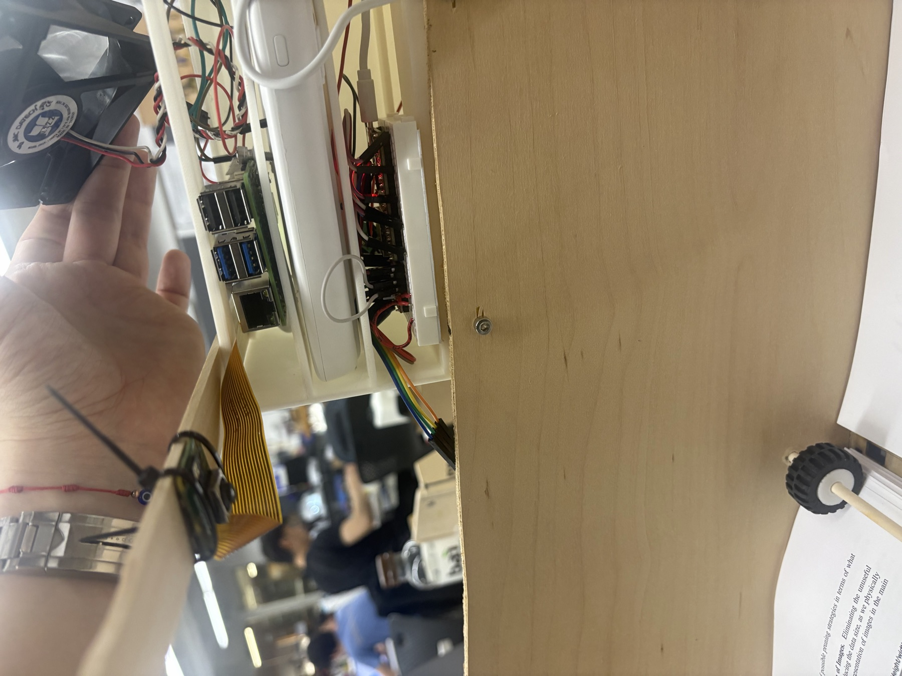
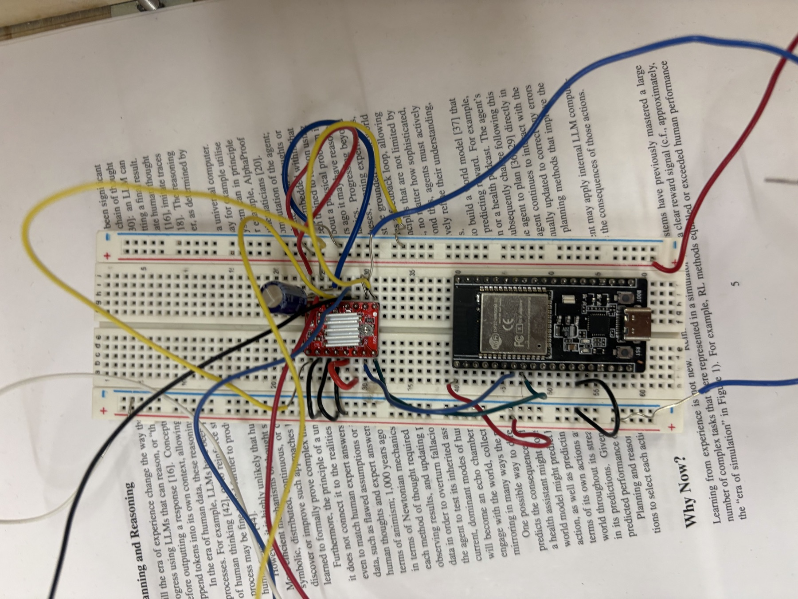
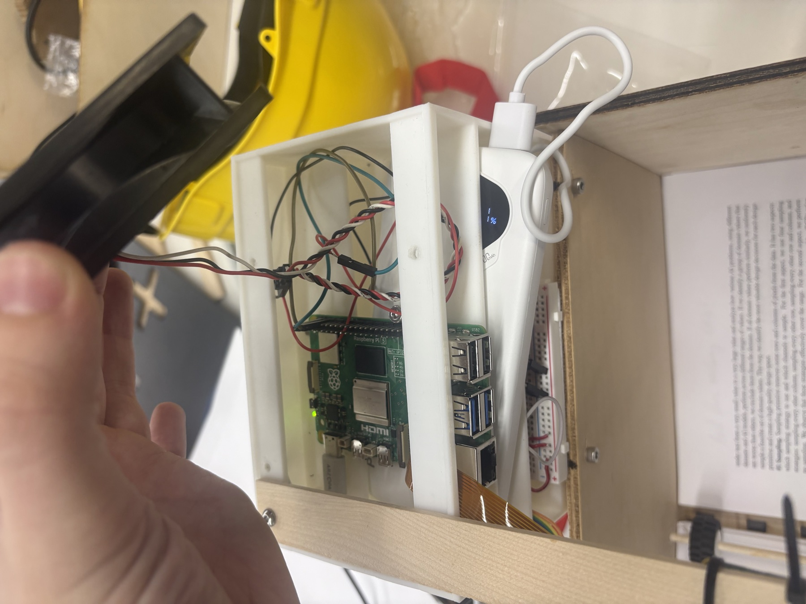

<div class="textcontainer">
<h3>Final Project — Autonomous PDF Scanner</h3>
# Demo
<div class="video-wrap">
<iframe src="https://www.youtube.com/embed/fGpl7d3SFrg" allowfullscreen></iframe>
</div>
# Motivation
I read a lot of academic papers and I always print them out, highlight with markers, and scribble in the margins. The marked-up paper is more useful to me than the digital one — but my notes live on dead trees while everything else (citations, search, sync between devices) lives on my laptop.
I wanted a machine that closes the loop: **feed it a marked-up paper, and the original PDF on my computer gets the same highlights and the same margin notes baked in, automatically.** No retyping, no scanning to a separate doc, no manual transcription. Place the stack of papers in the feeder, press **Auto-scan**, walk away.
It works.
<figure>
<p></p>
<figcaption>Top-down view of the assembled rig: the laser-cut scanner body, the rainbow CSI ribbon to the camera, the page-feed wheel on the right, and the 3D-printed compute enclosure with the Pi 5 inside (the fan I clipped on top is being held to the side here for the shot).</figcaption>
</figure>
# What it does, end-to-end
1. **You** put a stack of printed-and-marked-up papers into the page feeder.
2. **You** click **▶ Auto-scan whole paper** in the browser UI (served from the Raspberry Pi).
3. The Pi sends an HTTP request over WiFi to the ESP32: "advance one page."
4. The ESP32 spins a stepper motor with a precise pattern (8700 steps forward, 3500 back) → one page rolls under the camera.
5. The Pi waits 3 s for the paper to physically settle, then captures a 2304×1296 frame from the IMX708 sensor.
6. The Pi **identifies** which paper + which page this is, by ORB-matching the snapshot against a pre-ingested library of cached PDF page descriptors.
7. **Highlight extraction** runs by sampling HSV pixels at the precise locations of every known printed word.
8. **Handwriting regions** are found by subtracting printed-text bboxes from a binary ink mask.
9. **TrOCR-small** (int8-quantized) reads each handwriting crop.
10. **PyMuPDF** stamps the matching highlight + FreeText annotations on a copy of the original PDF, atomically.
11. A `sync.py` watcher on my Mac polls the Pi every 2 s, validates the annotated PDF (starts with `%PDF`, ends with `%%EOF`), and overwrites the local file in `~/Desktop/Papers/`.
12. Loop until a blank page is detected → auto-stop.
Total cycle time per page on the Pi 5 CPU is roughly **6–8 seconds** with a warm OCR model — most of which is the 3 s settle wait.
# Architecture
```
┌──────────────────────────────────────────────────────────────────────┐
│ My Mac (~/Desktop/Papers/*.pdf — the source of truth, sort of) │
│ │
│ ┌─ Browser ─────────────────┐ ┌─ sync.py (background) ──┐ │
│ │ http://reader.local:8000 │ │ polls /latest-analysis,│ │
│ │ • live camera preview │ │ pulls annotated PDF, │ │
│ │ • live annotated PDF │ │ atomically overwrites │ │
│ │ • highlight pills + OCR │ │ the local file. │ │
│ │ • progress / timing log │ └────────────────────────┘ │
│ └──────────┬────────────────┘ ▲ │
└────────────────│─────────────────────────────│──────────────────────┘
│ HTTP (auto-scan-stream SSE) │ HTTP GET annotated.pdf
▼ │
┌──────────────────────────────────────────────────────────────────────┐
│ Raspberry Pi 5 (reader.local) │
│ │
│ Picamera2 ──► MJPEG live stream (port 8000) │
│ Flask app ◄── auto-scan loop: │
│ 1. HTTP POST motor /turn ──────► ESP32 │
│ 2. wait 3s (page settles) │
│ 3. capture latest MJPEG frame │
│ 4. ORB-match against pre-cached library (per-paper "lock") │
│ 5. RANSAC homography → warp into PDF coordinates │
│ 6. HSV color masking → highlighted word indices │
│ 7. Mask out printed-text regions → handwriting regions │
│ 8. TrOCR-small (int8 quantized) on each crop │
│ 9. PyMuPDF: stamp highlights + FreeText annots, atomic write │
│ 10. SSE event "page_done" → UI refreshes preview │
│ 11. loop until find_best_page() returns None (blank page) │
└──────────────────────────────────────────────────────────────────────┘
▲
│ HTTP POST /turn
▼
┌──────────────────────────────────────────────────────────────────────┐
│ ESP32-WROOM-32 (battery-powered, 192.168.0.244:51917) │
│ │
│ WiFi WebServer ───► /turn ──► doPageFeed(): │
│ dir HIGH, 8700 steps forward │
│ dir LOW, 3500 steps back │
│ │
│ GPIO 32 → DRV8825 STEP │
│ GPIO 26 → DRV8825 DIR │
│ 3V3 → DRV8825 VDD, MS1, MS2, MS3 (1/16 microstep) │
│ 12V PSU → DRV8825 VMOT → NEMA 17 stepper │
└──────────────────────────────────────────────────────────────────────┘
```
# Bill of materials
| Item | Use | Notes / link |
|---|---|---|
| [Raspberry Pi 5 (8 GB)](https://www.raspberrypi.com/products/raspberry-pi-5/) | Vision + OCR compute | 4 GB version is tight once TrOCR loads |
| ~20 mm fan (found in the lab, probably a PC case fan) | Thermal management — clipped over the Pi 5 SoC | Wired to 5 V on the Pi's GPIO header. Without active cooling the Pi 5 throttles at 80 °C. The [official Pi 5 Active Cooler](https://www.raspberrypi.com/products/active-cooler/) is $5 and cleaner if you don't have spare parts. |
| [Pi 27 W USB-C PSU](https://www.raspberrypi.com/products/27w-power-supply/) | Real 5 V / 5 A power | Most other supplies brown out under load |
| [Arducam Camera Module 3 (IMX708, 12MP, M12 lens)](https://www.amazon.com/dp/B0C9PYCV9S) | Page capture | 75° diagonal FOV |
| 15-pin ↔ 22-pin CSI ribbon | Pi 5 has the smaller 22-pin connector | |
| [ESP32-WROOM-32 dev board](https://www.espressif.com/en/products/socs/esp32) | Wireless motor controller | Any ESP32-WROOM variant works |
| [DRV8825 stepper driver (red)](https://www.pololu.com/product/2133) | Step/dir → coil currents | Pin-compatible with DRV8825; uses 1/32 microstepping (6400 steps/rev) at max |
| NEMA 17 stepper motor | Drives the page-feed roller | Whatever NEMA 17 you have; tune the driver Vref to match its rated coil current |
| 12 V power supply (≥2 A) | Motor power (VMOT) | Wall wart or bench supply |
| USB-C power bank | ESP32 power (untethered from Pi) | Any 5 V battery |
| Breadboard, hookup wire, M-F jumpers, paper stand | | |
**Approximate total: $200** (Pi 5 + cooler + PSU + camera + cable ≈ $130; the ESP32 + motor + driver side ≈ $30; misc ≈ $40).
# Wiring
## ESP32 ↔ DRV8825 ↔ NEMA 17
```
ESP32 GPIO 32 ──▶ DRV8825 STEP
ESP32 GPIO 26 ──▶ DRV8825 DIR
ESP32 3V3 ──▶ DRV8825 VDD ─┐
ESP32 3V3 ──▶ DRV8825 MS1 ─├─ tie all three MS pins HIGH for 1/16 microstep
ESP32 3V3 ──▶ DRV8825 MS2 ─│ (without this the motor screams in full-step
ESP32 3V3 ──▶ DRV8825 MS3 ─┘ mode and stalls at our speed)
ESP32 GND ──▶ DRV8825 GND ─┐
12 V PSU GND ──▶ DRV8825 GND ─┴─ common ground is mandatory
12 V PSU + ──▶ DRV8825 VMOT
DRV8825 RST + SLP ─── jumper them together (otherwise driver
looks alive but never steps)
DRV8825 1A,1B,2A,2B ──▶ NEMA 17 coils (one pair per coil — test pairing with a
multimeter, see "Lessons" below)
```
<figure>
<p></p>
<figcaption>The ESP32-WROOM-32 (right) and the red DRV8825 driver (left, with heatsink) on a breadboard. Yellow + blue + red wires fan out to the motor coils; the thinner jumpers go to STEP / DIR / VDD / MS pins.</figcaption>
</figure>
### Pin-choice landmines for ESP32-WROOM-32
| Pin range | Why to avoid |
|---|---|
| **GPIO 0, 2, 5, 12, 15** | Strapping pins — driving them wrong at boot can prevent the chip from starting. |
| **GPIO 6–11** | Wired to on-board SPI flash. Don't touch. |
| **GPIO 34, 35, 36, 39** | **Input-only.** `digitalWrite(35, HIGH)` is silently ignored. Hit this exact bug once with the DIR pin assigned to GPIO 35 — silent failure, hard to debug. |
| Safe outputs | 13, 14, 16, 17, 18, 19, 21, 22, 23, 25, 26, 27, 32, 33 |
# Paper feeder mechanics
The page-feed motor + roller can't actually hold a stack of papers up at the right height by itself — as the stack gets shorter (we've fed several pages through), the top sheet drops and stops making contact with the drive roller.
The fix I used is dumb and effective: a **set of springs underneath the paper stack**, with the stack resting on a flat platen. The springs push the platen (and the whole paper stack) upward against an overhead stop. As the top sheet feeds away, the stack thins, the springs decompress and push the platen up by the thickness of that sheet, and the new top page lands at the same height as the previous one. Constant top-of-stack height with no electronics, no encoders, and almost no friction.
The roller is positioned just below that fixed top height. Each `turn` from the ESP32 drives the roller; the top sheet rolls off, and the spring-loaded platen pops the next sheet up into place. The 3-second `settle_ms` wait in the auto-scan loop is enough time for the spring/paper system to come to rest after a feed.
The "roller" itself is a stack of **three LEGO wheel rims** on the stepper shaft. Two were real LEGO wheels we had in the lab. With only those two, the contact width didn't span the full sheet — pages tended to skew and travel diagonally as they rolled. I 3D-printed a third matching wheel and added it to the stack so the roller covered the full page width, and the skew went away. The rubber tire profile on the LEGO rim grips paper surprisingly well.
The whole assembly is rough-and-ready — a properly-designed page-feeder mechanism would be the obvious next upgrade — but with the spring force tuned (enough to lift the current stack, not so much that the roller can't peel a sheet off), it's been working well enough.
<figure>
<img src="./IMG_9450.jpg" class="img-fluid" alt="Spring-loaded paper platen">
<figcaption>Looking down into the scanner body: nine coil springs sit between the floor of the box and a flat plywood platen. The paper stack rests on top of that platen. As pages feed off, the springs decompress and push the next sheet up to the same height.</figcaption>
</figure>
## The page-feed pattern (and the short backward kick)
Tuning the page-feed command took a lot of trial and error. The trick I landed on: drive the roller **forward** to roll the top sheet off, then drive it **backward** for a shorter distance. The forward stroke does the actual page advance; the backward stroke pushes the next sheet (which the grippy roller tends to grab partially along with the top one) back down under the stack instead of leaving it caught above.
The fix is the two-phase pattern that's hard-coded in the firmware:
```cpp
void doPageFeed() {
// Forward: roll the top sheet off the stack (8700 steps ≈ one page width)
digitalWrite(DIR_PIN, HIGH);
doSteps(forwardSteps); // 8700
// Backward: short reverse kick — pushes the partially-grabbed second
// sheet back UNDER the stack instead of letting it stay caught above.
digitalWrite(DIR_PIN, LOW);
doSteps(backwardSteps); // 3500
}
```
The exact step counts (8700 fwd, 3500 back) came out of tuning by hand with the serial commands (`turn N`, `dir 0|1`, `speed N`) until each `turn` reliably advanced one page and left the stack ready for the next cycle.
<figure style="max-width: 720px; margin: 18px 0;">
<div class="video-wrap"><video src="./demo-short.mp4" controls playsinline preload="metadata" muted></video></div>
<figcaption>One page rolling — the full pattern in action: forward to roll the top sheet off, then a short backward kick to seat the next sheet cleanly under the rollers for the next cycle.</figcaption>
</figure>
# Enclosures
There are two enclosures in this build, made very differently.
## The main scanner enclosure (laser-cut + bandsaw)
The big body that holds the paper feeder, the spring-loaded platen, the camera mount, and the slot the compute stack clips into is **mostly laser-cut from sheet stock** — flat panels with slots/tabs that join into a rigid box. A few extra pieces were **cut on the bandsaw** later as I was iterating on the design: it was faster to grab some stock and bandsaw an adjustment than to redraw the cut file and re-run the laser. The whole thing is rigid enough that the paper-camera geometry stays consistent across moves, which is the point.
## The compute enclosure (3D-printed)
<figure>
<p></p>
<figcaption>The 3D-printed compute enclosure clipped onto the side of the scanner body. The Raspberry Pi 5 is visible through the front face; the white cylinder above is one of the battery packs; the fan in the foreground (held by hand) clips onto the top of this enclosure to cool the Pi.</figcaption>
</figure>
Separate from the main body, the **electronics live in a small 3D-printed enclosure** I designed in Fusion 360. Five stacked rows, top-to-bottom: **battery → ESP32 → battery → Raspberry Pi 5 → fan**. The two batteries flank the ESP32 so the motor side stays power-isolated from the Pi side; the Pi 5 sits below with its fan exhausting downward.
The compute enclosure **clips onto the side of the main laser-cut scanner body**, so power, compute, motor, and camera all move together as one rigid unit — pull it off, set it down on another desk, snap it back on, and the geometry between the camera and the paper feeder is preserved.
The CAD model for the compute enclosure is live below (Fusion 360 viewer — rotate, zoom, explode).
<div class="video-wrap">
<iframe src="https://a360.co/4dqZOVq" allowfullscreen webkitallowfullscreen mozallowfullscreen></iframe>
</div>
If the embed doesn't load, <a href="https://a360.co/4dqZOVq" target="_blank">open the CAD model in a new tab</a>.
# The pipeline, in detail
Below are the key snippets that make the whole thing work; **the full source for every file is in the next section**.
## Camera capture
`Picamera2` runs a single 2304×1296 main stream encoded as MJPEG at q=85. I never call `capture_array` while recording is live — that re-configures the camera pipeline and can lock up the SoC. Instead I grab the most-recent MJPEG frame from the encoder buffer.
```python
cam.configure(cam.create_video_configuration(
main={"size": (2304, 1296)},
raw={"size": (4608, 2592)},
))
encoder = MJPEGEncoder(bitrate=80_000_000)
encoder.q = 85
cam.start_recording(encoder, FileOutput(out))
cam.set_controls({
"ScalerCrop": (0, 0, 4608, 2592), # full sensor area, no FOV cut
"AfMode": controls.AfModeEnum.Continuous,
"Sharpness": 2.0, # crisper edges for OCR
"NoiseReductionMode": controls.draft.NoiseReductionModeEnum.HighQuality,
})
```
## Page identification (which paper + which page)
The clever part. At PDF-ingest time, every page is rendered at 300 DPI and **ORB descriptors + keypoint coordinates** are pre-computed and cached to disk. At capture time, matching is two-stage:
1. **Cheap descriptor match** across the whole library → keep top 5 candidates by good-match count.
2. **RANSAC homography verification** on each candidate → pick the page with the most inliers.
```python
def find_best_page(snap_bgr, library_iter, min_inliers=25, top_k=5):
snap_kp, snap_des = orb.detectAndCompute(snap_gray, None)
bf = cv2.BFMatcher(cv2.NORM_HAMMING, crossCheck=True)
# Stage 1
raw_scores = []
for digest, name, page, ref_path, ref_des, kp_path in library_iter:
matches = bf.match(snap_des, ref_des)
score = sum(1 for m in matches if m.distance < 60)
raw_scores.append((score, digest, name, page, ref_path, kp_path, ref_des))
candidates = sorted(raw_scores, reverse=True)[:top_k]
# Stage 2 — RANSAC on cached keypoints
best = None
for raw, digest, name, page, ref_path, kp_path, ref_des in candidates:
ref_kp_pts = np.load(kp_path)
matches = bf.match(snap_des, ref_des)
src = np.float32([snap_kp[m.queryIdx].pt for m in matches[:300]]).reshape(-1,1,2)
dst = np.float32([ref_kp_pts[m.trainIdx] for m in matches[:300]]).reshape(-1,1,2)
H, mask = cv2.findHomography(src, dst, cv2.RANSAC, 5.0)
inliers = int(mask.sum()) if mask is not None else 0
if best is None or inliers > best[0]:
best = (inliers, raw, digest, name, page)
return best if best and best[0] >= min_inliers else None
```
A per-paper **lock** kicks in after the first match: subsequent captures only search within the current paper's pages (often ~10 pages, not the full 100+ in the library), trying `last_page + 1` first as a hot-path. Drops typical identification time from ~10 s to ~0.5 s on the 2nd+ page.
When `find_best_page` returns `None`, that's the **blank-page-end-of-stack** signal that stops the auto-scan loop.
References: [OpenCV ORB tutorial](https://docs.opencv.org/4.x/d1/d89/tutorial_py_orb.html), [OpenCV homography + RANSAC](https://docs.opencv.org/4.x/d1/de0/tutorial_py_feature_homography.html).
## Highlight extraction (no OCR needed)
Because the homography is exact, **I already know the bounding box of every printed word** from the PyMuPDF ingest. Highlight detection becomes a per-word HSV check:
```python
HIGHLIGHT_COLORS = {
"yellow": [((18, 70, 140), ( 40, 255, 255))],
"green": [((40, 70, 110), ( 85, 255, 255))],
"blue": [((80, 25, 170), (115, 200, 255))], # baby blue: low S, high V
"pink": [((140, 60, 130), (170, 255, 255))],
"orange": [((5, 100, 130), ( 18, 255, 255))],
"red": [((0, 35, 150), ( 10, 255, 255)), # H wraps around 0/180
((165, 35, 150), (180, 255, 255))],
}
```
For each word's rect, if a color mask covers >25% of its area, that word **index** (not text) is added to the highlighted set. Tracking by index, not text, is what stops a single false positive on "AI" from cascading to every "AI" on the page.
## Handwriting detection
Inverse trick: **subtract the known printed-text regions from a binary ink mask**, and whatever remains is a candidate handwriting region.
```python
ink = cv2.adaptiveThreshold(gray, 255, cv2.ADAPTIVE_THRESH_GAUSSIAN_C, ...)
for w in words:
ink[w.y-pad : w.y+w.h+pad, w.x-pad : w.x+w.w+pad] = 0
line_mask = cv2.dilate(ink, np.ones((1, line_width), np.uint8))
# connected components → line bounding boxes
```
All pixel thresholds scale with image height so the detection behaves the same regardless of DPI. Aspect-ratio cap rejects underlines and page rules; density check rejects sparse noise.
## Handwriting OCR
`microsoft/trocr-small-handwritten` (60 MB), int8-quantized in-place. Smaller than Florence-2-base and survives PyTorch's dynamic quantization cleanly.
```python
torch.quantization.quantize_dynamic(
model, {torch.nn.Linear}, dtype=torch.qint8, inplace=True
)
...
with torch.no_grad():
pixel_values = processor(images=pil, return_tensors="pt").pixel_values
ids = model.generate(pixel_values, max_length=64, num_beams=1)
```
Each crop is sanitized after decoding (control bytes stripped, non-Latin-1 rejected) and **cached by `(digest, page, box)`** so repeat captures of the same page are instant.
## PDF annotation, atomic write
PyMuPDF's `add_highlight_annot` and `add_freetext_annot`. The FreeText placement clamps each annotation rect to fit within the page bounds and shuffles down to avoid overlapping previously-placed annotations. The output is written atomically (temp file + `replace`) so the Mac watcher can never read a half-written file.
```python
out_bytes = doc.tobytes()
tmp = annotated_path.with_suffix(".pdf.tmp")
tmp.write_bytes(out_bytes)
tmp.replace(annotated_path)
```
# On performance: latency, throttling, and the OCR-model rodeo
This was the messiest part of the project — and the part with the most lessons. Before any of the code on this page worked end-to-end at the speed you see in the demo, I'd cycled through several OCR models and several Pi-5 power-management hacks. The journey is worth documenting because the trade-offs are universal for anyone trying to run a vision-language model on a small computer.
## Handwriting OCR models I tried, in order
| Attempt | Model | Size | Per-crop time (throttled Pi 5) | Outcome |
|---|---|---|---|---|
| 1 | [TrOCR-small handwritten](https://huggingface.co/microsoft/trocr-small-handwritten) | ~60 MB | ~2-3 s | Worked, decent on neat print-style handwriting, **~65–75% on cursive.** |
| 2 | [TrOCR-base handwritten](https://huggingface.co/microsoft/trocr-base-handwritten) | ~250 MB | ~5-10 s | Slightly better than small; **3-4× slower.** Marginal accuracy improvement for the latency cost. |
| 3 | [Florence-2-base](https://huggingface.co/microsoft/Florence-2-base) (Microsoft VLM) | ~230 MB | ~25-30 s | Top quality on cursive, BUT… (see below). |
| 4 (final) | TrOCR-small + **int8 dynamic quantization** | ~60 MB | ~1-2 s | Where we landed. |
### Why Florence-2 fell off
Florence-2 was supposed to be the upgrade. It's a small vision-language model with a dedicated `<OCR>` task token; on a desktop GPU it crushes TrOCR. On the Pi 5 CPU, it took **30 seconds per handwriting crop** even with greedy decoding and `max_new_tokens=64`. With 2–3 handwriting regions per page, that's a full minute of OCR per page on top of everything else.
Worse, it doesn't play nice with `torch.quantization.quantize_dynamic`. The error I got was a weirdly-typo'd `OCR: quantization failed: unknown architecure` (sic — the missing "t" is a clue the message comes from Florence-2's bundled modeling code, not from torch itself). Per-Linear-module quantization with try/except also bailed silently. Without quantization, no speedup, so the 30-second per-crop number is the floor on this hardware.
Florence-2 also has compatibility issues with newer `transformers` releases. Loading it raised:
```
AttributeError: 'Florence2LanguageConfig' object has no attribute 'forced_bos_token_id'
```
I patched that line by replacing `self.forced_bos_token_id` with `getattr(self, 'forced_bos_token_id', None)` in the cached `configuration_florence2.py`, only to hit the next:
```
AttributeError: RobertaTokenizer has no attribute additional_special_tokens.
Did you mean: 'add_special_tokens'?
```
At that point it was clearly going to be a game of whack-a-mole with each transformers release, so I pinned `transformers==4.45.2` and Florence-2 finally loaded. That fixed it. The 30 s/crop latency did not.
**Decision: revert to TrOCR-small and make it as fast as possible.**
### Making TrOCR fast
Three optimizations stacked on TrOCR-small, in order of impact:
1. **`num_beams=1` (greedy decode)** — TrOCR defaults to beam search. Beams ≥3 multiply the decoder cost by the beam width. For 5-to-10-token margin notes, greedy is fine.
2. **`max_new_tokens=64`** — was 256 by default. Generation is auto-regressive, so the time scales with output length.
3. **`torch.quantization.quantize_dynamic(model, {torch.nn.Linear}, dtype=torch.qint8, inplace=True)`** — TrOCR's architecture is "boring" enough (standard transformer encoder + standard transformer decoder) that PyTorch's dynamic quantization works out of the box. **~2× speedup** on the language decoder. Accuracy drop on neat handwriting was imperceptible.
Result: **~1–2 seconds per crop** once the model is warm, down from ~3–5 s unquantized.
Plus a `(digest, page, box)` cache so repeated captures of the same page during testing/iteration are instant.
## Per-stage timing visible in the UI
To debug all of the above I built a live per-stage timing log into the auto-scan UI. The Pi emits Server-Sent Events as it processes each page; the browser appends each event to a scrollable log with the per-stage delta and cumulative time. A typical scan looks like:
```
[ 0.00s +0.00s] motor_turn — Telling motor to advance page 1
[ 3.11s +3.11s] settle — Waiting 3000ms for paper to settle
[ 3.11s +0.00s] capture — Capturing page #1
[ 3.16s +0.05s] identify — Matching (locked)
[ 4.05s +0.89s] match_found — Era of Experience · page 1 (inliers 144)
[ 4.18s +0.13s] align — Aligning snapshot to PDF page
[ 5.25s +1.07s] aligned — inliers 122
[ 5.25s +0.00s] highlights — Detecting highlights
[ 5.61s +0.36s] highlights_done — 4 highlighted word(s) across 1 color(s)
[ 6.37s +0.76s] hw_detected — 1 region(s)
[ 6.37s +0.00s] ocr — region 1/1 (495×213px)
[ 7.92s +1.55s] ocr_done — 'so insightful'
[ 8.10s +0.18s] annotate — Writing highlights and notes to annotated PDF
[ 8.27s +0.17s] page_done — page #1 annotated
```
Once I could see each stage's actual cost, the optimization targets were obvious — match-stage caching, lock-on-first-paper, OCR cache, etc. cut the dominant per-page cost substantially.
## The Pi-5 throttling saga
For about half of the development time, the Pi 5 was either crashing mid-analyze or running with severe throttles. Here's the chronology:
**Symptom:** during analyze, the Pi would briefly stop responding to network. `ssh` would time out, `ping` would partially fail. The Pi would either recover after ~30 s or hard-reset entirely. No useful log entries — `journalctl` was non-persistent on default Pi OS install, so post-mortems were impossible.
**First hypothesis: heat.** Temperature peaked at 62 °C idle and presumably much higher under load. I clipped a **random ~20 mm fan I found in the lab** (probably from a PC) over the Pi 5 SoC and wired it to the Pi's 5 V + GND GPIO pins. Crude, but idle temp dropped from 62 °C to ~37 °C and *most* of the crashes stopped. (The [official Pi 5 Active Cooler](https://www.raspberrypi.com/products/active-cooler/) does the same thing more elegantly for $5.)
**Second hypothesis: power.** I was running the Pi off a 5 V / 3 A USB-C charger. The Pi 5 actually wants 5 V / 5 A (27 W); under the 3 A supply it would brown out during CPU spikes — which look identical to thermal shutdown from the outside. The trick is that `vcgencmd get_throttled` returns `0x50000` (under-voltage + throttling occurred), which I only noticed days in.
While waiting for the official 27 W PSU to arrive, I stacked three software mitigations:
```bash
# 1. Pin the Flask app to cores 0,1 only (halves peak current draw)
taskset -p -c 0,1 $(pgrep -f "ocrenv.*app.py")
# 2. Persistently cap CPU max frequency: 2.4 GHz → 1.5 GHz (~30% less peak power)
echo "arm_freq=1500" | sudo tee -a /boot/firmware/config.txt
sudo reboot
# 3. Also set persistent journaling so the next crash leaves a forensic trail
sudo mkdir -p /var/log/journal
sudo systemd-tmpfiles --create --prefix /var/log/journal
sudo systemctl restart systemd-journald
```
Combined, those three knocked peak current draw down enough that the crashes stopped — but analyze got significantly slower, because the OCR step is exactly the kind of workload that benefits from running on all four cores at full clock.
Once the proper 27 W supply showed up, **I reversed every one of those throttles**:
```bash
# undo the freq cap permanently
sudo sed -i '/^arm_freq=/d' /boot/firmware/config.txt
# bump the live frequency back to 2400 MHz right now
echo 2400000 | sudo tee /sys/devices/system/cpu/cpu*/cpufreq/scaling_max_freq
# restart the app WITHOUT the taskset pin
pkill -f app.py
nohup /home/vlad/ocrenv/bin/python -u app.py > /tmp/app.log 2>&1 &
```
Back to 2.4 GHz, all 4 cores, no crashes, ~8 s per page. **The lesson:** the throttling hacks were a worthwhile band-aid while debugging, but the real fix was the right PSU. If you're building a Pi 5 project that pushes the CPU, the official supply is not optional.
# Demo screenshots
<figure>
<img src="./screenshot-ui-running.png" class="img-fluid" alt="UI mid-scan">
<figcaption>PLACEHOLDER: full UI screenshot during an auto-scan — live camera (left), annotated PDF render (right), timing log with per-stage events, highlight pills and handwriting OCR results below.</figcaption>
</figure>
<figure>
<img src="./screenshot-debug-overlay.png" class="img-fluid" alt="Debug overlay">
<figcaption>PLACEHOLDER: the debug overlay — orange word boxes (every printed word's known position), colored outlines (detected highlights), red boxes (handwriting regions), green page-bounds rectangle.</figcaption>
</figure>
<figure>
<img src="./screenshot-highlights.png" class="img-fluid" alt="Before / after">
<figcaption>PLACEHOLDER: a side-by-side — physical page with blue + red highlights and a hand-written margin note, next to the annotated PDF in Preview showing the same highlights and the OCR'd text inserted at the margin location.</figcaption>
</figure>
# Source code
All five files used in the project, with syntax highlighting. Click a tab to switch.
<div id="source-tabs-mount"></div>
The UI template (`ocr-notes/templates/index.html`) is ~600 lines of HTML + CSS + vanilla JS — mostly markup, included in the `index.html` tab above. All code for the project is on this page; nothing is hosted externally.
File locations on my machine, for reference:
- Pi-side Python (`app.py`, `pipeline.py`, `source.py`): `/Users/vlad/Projects/rpi-flash/ocr-notes/`
- ESP32 firmware: `/Users/vlad/Projects/ocresp32/firmware/motor/motor.ino`
- Mac sync watcher: `/Users/vlad/Projects/rpi-flash/sync.py`
# Lessons learned
This is the section I wish someone had written before I started.
### Power
- A Raspberry Pi 5 needs **5 V / 5 A** sustained. Phone chargers, generic 5 V/2 A wall warts, and most laptop USB-C ports will brown out during CPU + camera + encode spikes. The kernel just resets, nothing in the log. Once I switched to the official 27 W PSU all the random "crashes" stopped instantly.
### Heat
- Without active cooling, the Pi 5 hits **80 °C and thermal-throttles** during sustained inference. I used a random ~20 mm fan I found in the lab (probably from a PC) wired to the GPIO 5 V pin, which dropped sustained temps by 25+ °C. The [official Pi 5 Active Cooler](https://www.raspberrypi.com/products/active-cooler/) is $5 and tidier. Either way, active cooling is mandatory.
### Camera Module 3 (Arducam IMX708)
- Continuous AF (`AfMode=Continuous`) is what made it actually focus.
- 75° diagonal FOV is **narrower than most webcams**. The camera needs ~20 cm clearance above an A4 page; the [wide variant](https://www.arducam.com/arducam-12mp-imx708-120-dfov-wide-angle-fixed-focus-hdr-mipi-camera-module-for-raspberry-pi.html) (102°) would let the rig be shorter.
### ESP32 pin disasters
- **GPIO 35 is input-only** on ESP32-WROOM-32. `digitalWrite(35, ...)` is silently ignored — no error, just nothing happens. Stepper DIR pin had to move to GPIO 26.
- **GPIO 0** held LOW at boot = the chip enters download mode and waits for a flash. Mine kept landing there because I'd accidentally left a jumper on it.
- The DRV8825's **SLP and RST pins must be bridged together** (or both pulled HIGH). If they float LOW the driver looks alive (LED on, current chops audibly) but never actually steps.
### Stepper motor + the dead 12 V PSU
- **The actual root cause of half the motor-side bugs was a dying 12 V power supply.** It killed an ESP32 outright (the chip got hot enough to burn me when I touched it) and damaged a couple of jumper wires in ways I couldn't see. Symptoms were all over the place: motor not stepping, motor buzzing without turning, ESP32 boot-looping, intermittent serial. **Kassia helped me swap the PSU and replace every wire on the motor side, and the whole thing started working immediately.** Lesson: when a setup is misbehaving in three different ways at once, suspect upstream power before you suspect any one of the symptoms.
- **MS1/MS2/MS3 all tied HIGH** for 1/32 microstepping on DRV8825. Floating = full step = unbearable grinding noise and the motor stalls at our step rate.
- Steppers **cannot start at high speed from rest**. At 100 µs half-period from a dead stop the motor just buzzes. I briefly added an acceleration ramp; the simpler answer was to just keep the cruise speed modest.
### Python / model environment
- Pi OS Bookworm/Trixie's system Python is PEP 668 externally-managed. `pip install` needs `--break-system-packages` or a venv. I used a venv with `--system-site-packages` so apt-installed cv2 / Picamera2 / NumPy are inherited and only `torch` + `transformers` get pip-installed on top.
- I tried `microsoft/Florence-2-base` first but its bundled `configuration_florence2.py` is incompatible with newer transformers releases (`AttributeError: 'Florence2LanguageConfig' object has no attribute 'forced_bos_token_id'`) — and each monkey-patch revealed the next issue. **Settled on TrOCR-small + int8 quantization:** smaller, runs at the speed budget, no architectural drama.
### Networking
- **mDNS** is the gift that makes Pi ↔ ESP32 ↔ Mac discovery trivial — `reader.local`, `ocresp32-motor.local` — until you hit a network with client isolation (where nothing `.local` resolves between clients). I have a hard-coded IP fallback for that case.
- Picked an **uncommon port (51917)** for the ESP32 web server so randos on shared/public WiFi can't trigger page turns by hitting `:80`.
### File sync race conditions
- The Pi serves the annotated PDF, the Mac polls every 2 s, **validates** that the bytes start with `%PDF-` and end with `%%EOF` within the last 1 KB, and only then atomically replaces the local file. Without these checks, a single Pi crash mid-write would corrupt my source-of-truth PDFs.
- `.pdf.orig` backup is taken on the first overwrite, so it's always one `cp` away from being restored.
# External resources I leaned on
- **Picamera2** [official documentation](https://github.com/raspberrypi/picamera2) and [user guide](https://datasheets.raspberrypi.com/camera/picamera2-manual.pdf)
- [DRV8825 stepper driver datasheet (TI)](https://www.ti.com/lit/ds/symlink/drv8825.pdf) · [Pololu carrier product page](https://www.pololu.com/product/2133)
- [ESP32-WROOM-32 pin reference (Random Nerd Tutorials)](https://randomnerdtutorials.com/esp32-pinout-reference-gpios/)
- [OpenCV ORB / RANSAC / homography tutorial](https://docs.opencv.org/4.x/d1/de0/tutorial_py_feature_homography.html)
- [PyMuPDF documentation](https://pymupdf.readthedocs.io/) (the `add_highlight_annot` and `add_freetext_annot` APIs)
- [Microsoft TrOCR](https://huggingface.co/microsoft/trocr-small-handwritten) on Hugging Face
- [PyTorch dynamic quantization tutorial](https://pytorch.org/tutorials/recipes/recipes/dynamic_quantization.html)
- [USB Gadget Mode on Pi 5](https://www.raspberrypi.com/news/usb-gadget-mode-in-raspberry-pi-os-ssh-over-usb/) — used during the initial flashing setup
- [ESP32 mDNS library docs](https://docs.espressif.com/projects/arduino-esp32/en/latest/api/mdns.html)
# What I'd do differently / next steps
- **Pi AI Kit (Hailo-8L)** ([info](https://www.raspberrypi.com/news/ai-kit-available-now/)) — would let OCR run on the NPU at ~30 ms/crop instead of TrOCR's ~1–2 s/crop on the CPU. Obvious upgrade.
- **A purpose-built page feeder** — the spring-loaded platen + roller works but a proper friction-feed mechanism (like the one in a cheap document scanner) would be more compact and more reliable.
- **Wide-FOV camera module** — Camera Module 3 Wide (102° diagonal) would let the rig be much smaller.
- **Multi-paper batch mode.** Today the stop condition is "blank page = done"; for stacks separated by blank sheets I'd want to keep going and produce a separate annotated PDF per paper.
- **Voice-note annotations.** Mic on the Pi + Whisper-tiny → spoken margin notes typed into the PDF at the cursor position.
# Code locations
All code is embedded on this page in the tabs above. The local paths on my machine, for reference:
- **Pi:** `/Users/vlad/Projects/rpi-flash/ocr-notes/` (deployed to `vlad@reader.local:~/ocr-notes/`)
- **ESP32:** `/Users/vlad/Projects/ocresp32/firmware/motor/motor.ino`
- **Mac sync:** `/Users/vlad/Projects/rpi-flash/sync.py`
</div>